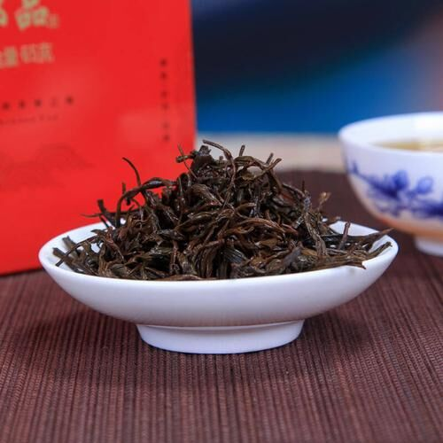

红茶制造工艺

正山小种
祁门红茶
镇红茶
金骏眉
红茶六大功效
一、 暖体抗寒 红茶中含有丰富的蛋白质和糖，生热暖腹，能增强人体的抗寒能力。
二、 强健骨骼 红茶叶中含有丰富的黄酮类物质，可减少妇女患骨质疏松症的危险。
三、 防止中风和心脏病 由于红茶中含有一种类黄酮化合物，其作用类似于抗氧化剂，能防止中风和心脏病。
四、 红茶护胃 红茶中的茶多酚的氧化产物能够促进人体消化，能消炎、保护胃黏膜。
五、 可助消腻 红茶可以去油腻、帮助胃肠消化、促进食欲。
六、 可预防感冒 红茶甘温，含有丰富的蛋白质和糖，能增强人体的抵抗力。